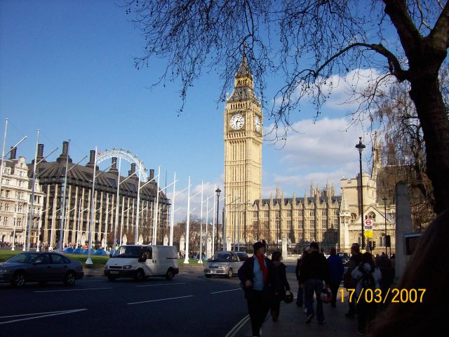
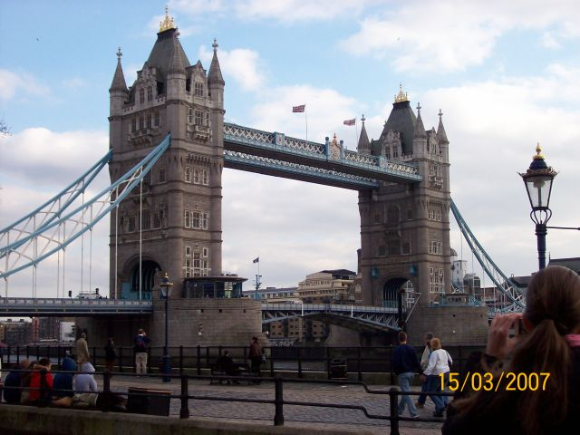

MY
STAY IN LONDON
From
11th to 18th of March 2007, we
went to London..

First
we saw our school: it had
3 floors, at the first floor there was the computer room and the hall,
at the second there was the bathrooms and others classrooms but ours
was on the 3rd.
Every
morning, from Monday to Friday, we had lessons with Kathy our "crazy"
teacher! She was fantastic in teaching and we loved her a lot!
After
the school, we went to London with our teachers, Mrs
Casanova and Mr McDaniel.
On
Sunday, we went to Trafalgar Square, National Gallery, St James’s
Park and
Buckingham Palace. I think that National Gallery was the best part
because I love its wonderful paintings.
On Monday, we went in
Wimbledon
with Kathy, to explore the city and go for a walk in the shopping
centre of the city: it was very funny! Then,we went to St Paul’s
Cathedral, and the Museum of London.
On Tuesday, we went to
the
Natural History Museum, which in my opinion was the best Museum of
all, because it's very interactive, and to the Science
Museum, that I don't like very much .
On Wednesday,
we
went to the Royal Observatory Museum, where we saw the Greenwich
Meridian and we made a lot of photos, the Maritime Museum and the
Queen's house that, unluckily, we hadn't visited because it was closed
to the public.
On Thursday we went to the Tower of
London, where we saw ancient weapons, armours, the Crown Jewels and
the Queen’s guards. We stayed there a lot of time because the
place was very big!
On Friday, we went to the Globe Theatre(what's a magnificent
reconstruction!I like it so much),Southwark
Cathedral and Clink Prison.
Then, on
Saturday,
we went to the British Museum. I was very unhappy because I'd like to
visit it much deeper and longer but we had no time! We also went to
Covent Garden, where I had a very BIG hot dog, the House
of Parliament, Westminster Abbey and the Big
Ben.
And then, on our
last day, we went to the Tower Bridge...it was
like a postcard!

The
weather was fantastic, always sunny(...strange for March in
Britain!)and we had a lot of fun!
I think London is a very beautiful city, so lively and full of
interesting places to see - I'll come back there surely soon!